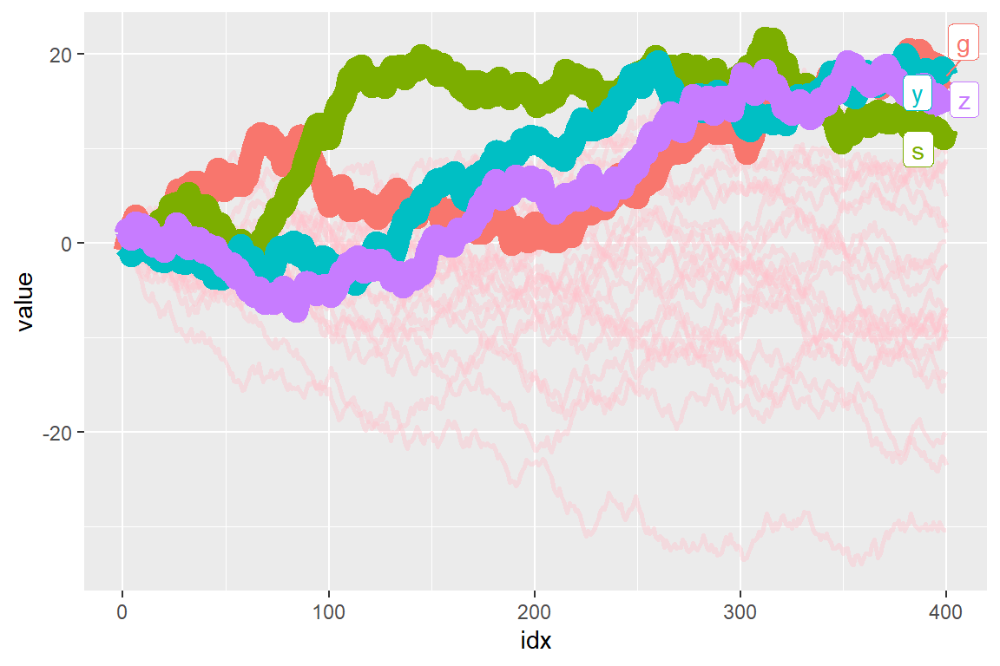

Introduction to gghighlight
Hiroaki Yutani
2018-12-29
Source:vignettes/gghighlight.Rmd
gghighlight.RmdMotivation
Suppose we have a data that has so many series that it is hard to identify them by their colours as the differences are so subtle.
set.seed(2)
d <- purrr::map_dfr(
letters,
~ data.frame(
idx = 1:400,
value = cumsum(runif(400, -1, 1)),
type = .,
flag = sample(c(TRUE, FALSE), size = 400, replace = TRUE),
stringsAsFactors = FALSE
)
)
To filter the data to the reasonable number of lines, we can use dplyr’s filter() here.
library(dplyr, warn.conflicts = FALSE)
d_filtered <- d %>%
group_by(type) %>%
filter(max(value) > 20) %>%
ungroup()
ggplot(d_filtered) +
geom_line(aes(idx, value, colour = type))
But, it seems not so handy. For example, what if we want to change the threshold in predicate (max(value) > 20) and highlight other series as well? It’s a bit tiresome to type all the code above again every time we replace 20 with some other value.
Besides, considering one of the main purposes of visualization is to get the overview of a data, it may not be good to simply filter out the unmatched data because the plot loose its context then.
Here comes gghighlight package, dplyr::filter() equivalent for ggplot2.
(If you are interested in the more details behind the idea of highlighting, please read this post: Anatomy of gghighlight.)
gghighlight()
The main function of gghighlight package is gghighlight(). For example, by using this function, we can highlight the lines whose max values are larger than 20 like below:
library(gghighlight)
ggplot(d) +
geom_line(aes(idx, value, colour = type)) +
gghighlight(max(value) > 20)
#> label_key: type
You can specify as many predicates as you like. For example, the following code highlights the data that satisfies both max(value) > 15 and mean(flag) > 0.55.
ggplot(d) +
geom_line(aes(idx, value, colour = type)) +
gghighlight(max(value) > 15, mean(flag) > 0.55)
#> label_key: type
Customization
As adding gghighlight() results in a ggplot object, it is fully customizable just as we usually do with ggplot2 like custom themes.
ggplot(d) +
geom_line(aes(idx, value, colour = type)) +
gghighlight(max(value) > 19) +
theme_minimal()
#> label_key: type
The plot also can be facetted:
ggplot(d) +
geom_line(aes(idx, value, colour = type)) +
gghighlight(max(value) > 19) +
theme_minimal() +
facet_wrap(~ type)
#> label_key: type
unhighlighted_params
If you want to change the style of unhighlighted layers, use unhighlighted_params.
ggplot(d) +
geom_line(aes(idx, value, colour = type), size = 5) +
gghighlight(max(value) > 19,
unhighlighted_params = list(size = 1, colour = alpha("pink", 0.4)))
#> label_key: type
Geoms
gghighlight() can highlight almost every geoms. Here are some examples.
Bar
gghighlight() can highlight bars.
p <- ggplot(iris, aes(Sepal.Length, fill = Species)) +
geom_histogram() +
gghighlight()
#> label_key: Species
p
#> `stat_bin()` using `bins = 30`. Pick better value with `binwidth`.
#> `stat_bin()` using `bins = 30`. Pick better value with `binwidth`.
Are you wondering if this is really highlighted? Yes, it is. But, the unhighlighted bars are all overwritten by the highlighted bars. This seems not so useful, until you see the fecetted version:
p + facet_wrap(~ Species)
#> `stat_bin()` using `bins = 30`. Pick better value with `binwidth`.
#> `stat_bin()` using `bins = 30`. Pick better value with `binwidth`.
Point
As is explained in Anatomy of gghighlight, lines and points typically have different semantics (group-wise or not). But, in most cases, you don’t need to be careful about the difference with gghighlight() because it automatically picks the right way of calculation.
set.seed(10)
d2 <- dplyr::sample_n(d, 20)
ggplot(d2, aes(idx, value)) +
geom_point() +
gghighlight(value > 0, label_key = type)
More precisely, gghighlight() takes the following strategy:
- Calculate the group IDs from mapping.
- If
groupexists, use it. - Otherwise, assign the group IDs based on the combination of the values of discrete variables.
- If
- If the group IDs exists, evaluate the predicates in a grouped manner.
- If the group IDs doesn’t exist or the grouped calculation fails, evaluate the predicates in an ungrouped manner.
Note that, in this case, label_key = type is needed to show labels because gghighlight() chooses a discrete variable from the mapping, but aes(idx, value) consists of continuous variables only.
Non-logical predicate
To construct a predicate expression like bellow, we need to determine a threshold (in this example, 20). But it is difficult to choose a nice one before we draw plots.
So, gghighlight() allows predicates that return non-logical (e.g. numeric and character) results. The values are used for sorting data and the top max_highlight of rows/groups are highlighted:
ggplot(d, aes(idx, value, colour = type)) +
geom_line() +
gghighlight(max(value), max_highlight = 5L)
#> label_key: type
Labels
gghighlight() adds the direct labels for some geoms. Currently, the following geoms are supported:
-
point: add labels at each highlighted points. -
line: add labels at the right ends of each highlighted lines. -
bar: (do not add labels)
If you don’t want them to be labelled automatically, you can specify use_direct_labels = FALSE
ggplot(d) +
geom_line(aes(idx, value, colour = type)) +
gghighlight(max(value) > 20, use_direct_label = FALSE)
Labels are drawn by geom_label_repel(). If you want to customize the labels, you can pass parameters to it via label_params.
ggplot(d) +
geom_line(aes(idx, value, colour = type)) +
gghighlight(max(value) > 20, label_params = list(size = 10))
#> label_key: type
You can also add labels by yourself. It is easy to add labels on only highlighted data because gghighlight() replaces the plot’s data to the filtered one.
p <- ggplot(d2, aes(idx, value)) +
geom_point(size = 4) +
gghighlight(value > 0, use_direct_label = FALSE)
# the filtered data
p$data
#> idx value type flag
#> 1 78 2.91137069 n FALSE
#> 4 7 0.21285231 s TRUE
#> 6 344 5.82021950 f TRUE
#> 12 299 0.09233384 o FALSE
#> 18 343 17.78239148 g FALSE
#> 19 141 1.25227154 k FALSE
p + geom_label(aes(label = type),
hjust = 1, vjust = 1, fill = "purple", colour = "white", alpha= 0.5)